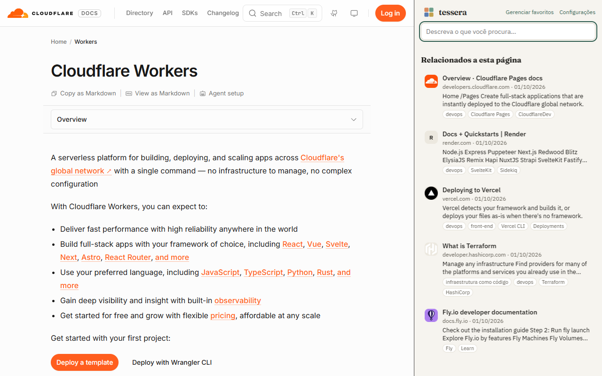
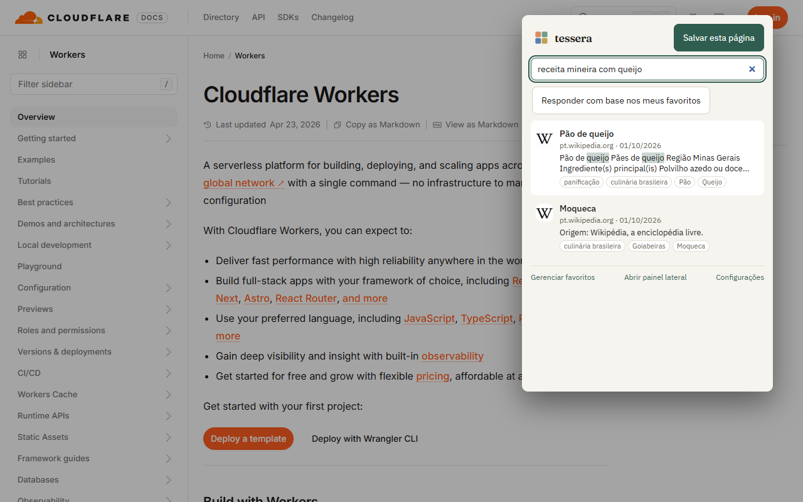
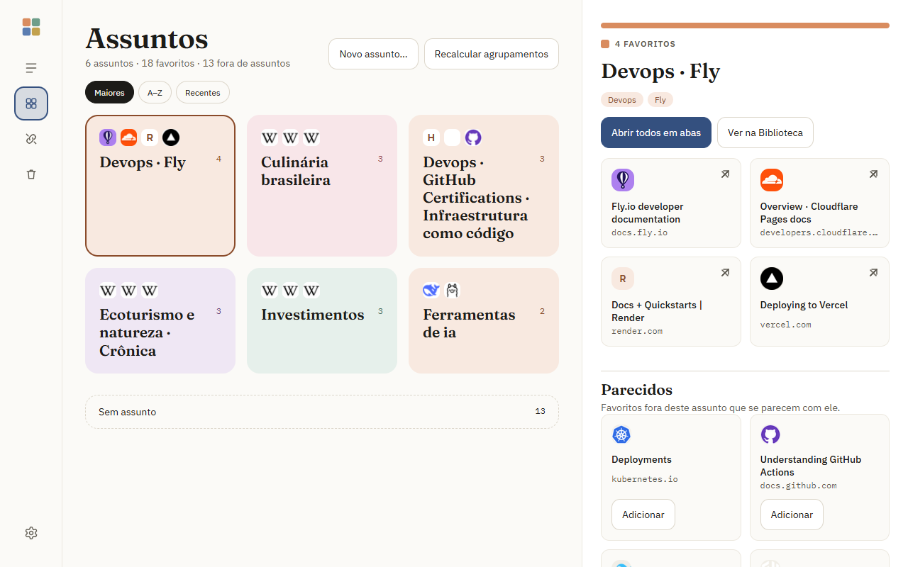
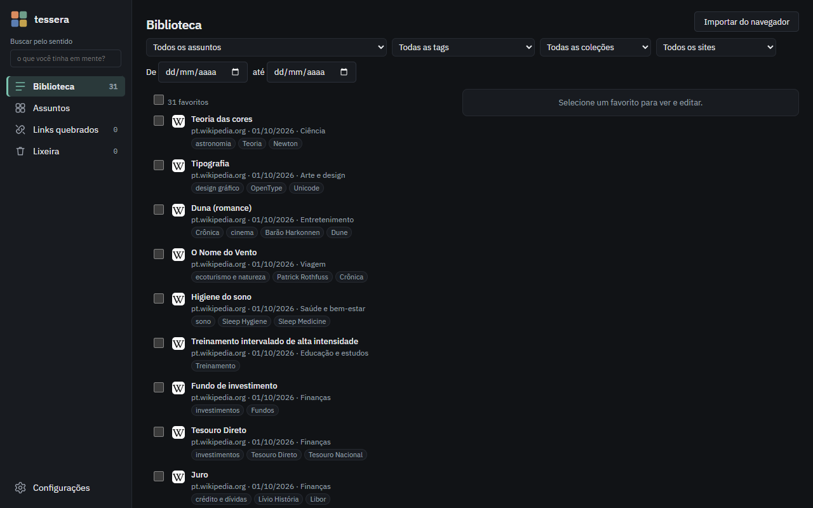
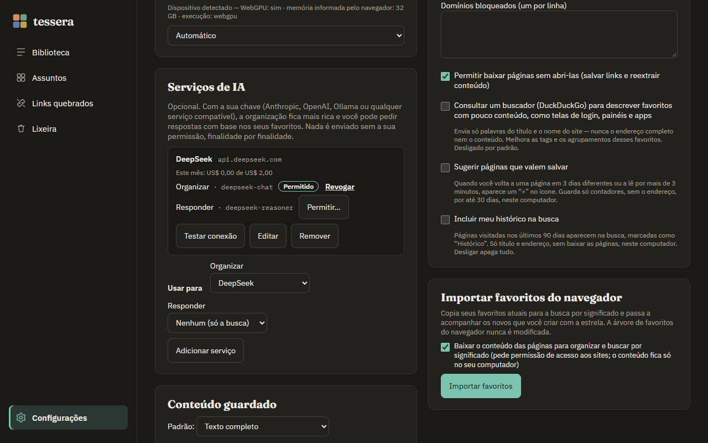
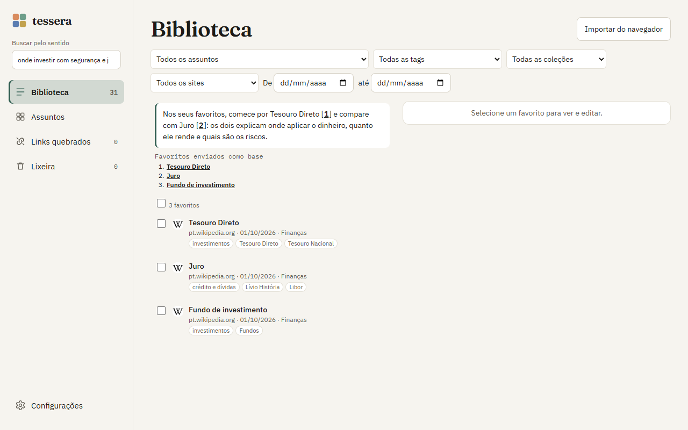
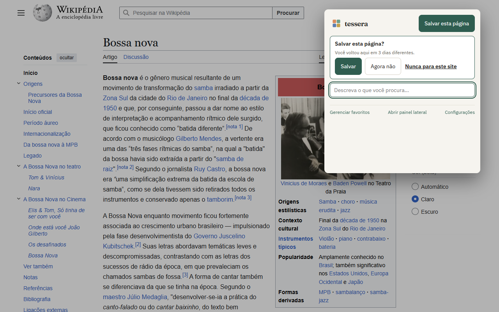

1Primeiros passos
Marque cada passo conforme avança — o progresso fica guardado só neste navegador.
2Relacionados à página aberta

Abra o painel lateral (ícone do Tessera → Painel lateral, ou o menu lateral do navegador). Em Relacionados a esta página aparecem os favoritos que tratam do mesmo assunto da aba aberta — sem você digitar nada. Trocou de aba? A lista acompanha.
É a busca pelo sentido trabalhando a seu favor: lendo a documentação de um serviço, você vê os guias, alternativas e tutoriais que já tinha guardado sobre aquilo.
Para ler a página aberta, o Tessera precisa do acesso aos sites (Configurações → Privacidade → “Permitir baixar páginas…”). Ele lê só para comparar com seus favoritos; nada é enviado.
3Buscar descrevendo

Escreva como você lembra: “aquela receita mineira com queijo”, “como publicar um site sem servidor”, “treino curto em casa”. Os resultados vêm pelo significado, com o trecho que combina destacado.
| Onde | Como |
|---|---|
| Popup | clique no ícone ou Alt+Shift+F; ↑ ↓ e Enter para abrir (Alt+Enter abre em nova aba) |
| Barra de endereço | digite sf, espaço e a busca |
| Painel lateral | campo de busca no topo |
| Biblioteca | busca no topo, com filtros por tag, coleção, site, data e assunto |
4Assuntos

Em Assuntos, o Tessera agrupa seus favoritos pelo que eles têm em comum. Os assuntos nascem dos seus próprios favoritos, sem uma lista de categorias pronta, e o nome vem dos próprios membros.
- Clique num assunto para ver os favoritos dele no painel ao lado: Abrir todos em abas ou Ver na Biblioteca.
- Sem assunto: o que ainda não se encaixa. Cada item mostra Parece com: … quando há um assunto próximo — um clique e ele entra.
- Novo assunto…: crie um assunto seu (no topo, a partir de um favorito sem assunto, ou selecionando vários na Biblioteca). Ele mantém o nome que você deu, mesmo quando os assuntos são recalculados.
- Parecidos: no painel de cada assunto, favoritos de fora que se parecem com ele, para adicionar.
- Recalcular agrupamentos refaz os assuntos com tudo o que já está pronto e mostra o resultado (antes → depois).
5Aparências

Em Configurações → Aparência: Calma (espaço e leitura), Densa (muitos favoritos por tela) e Visual (peças com a cor do assunto e ícones grandes), cada uma em claro, escuro ou seguindo o sistema.
6IA com a sua chave (opcional)

Sem nada configurado, o Tessera já organiza e busca com a IA local. Se quiser tags e resumos mais ricos e respostas com base nos seus favoritos, conecte um serviço com a sua chave:
- Configurações → Serviços de IA → Adicionar serviço e escolha Anthropic, OpenAI, Ollama (no seu computador) ou Compatível — qualquer serviço no formato da OpenAI ou da Anthropic (DeepSeek, Groq, OpenRouter, LM Studio…), informando o endereço.
- Cole a chave e clique em Carregar modelos do serviço: os campos de modelo passam a sugerir os nomes.
- Defina o limite por mês (padrão US$ 5). Se o modelo não estiver na tabela de preços, informe o preço.
- Em cada finalidade, clique em Permitir…: você vê o endereço exato e o que será enviado, e só então autoriza. Revogar para na hora, inclusive o que estava na fila.
- Testar conexão confirma que está tudo certo.
Qual modelo para quê?
Para organizar, um modelo rápido e barato — ele roda uma vez por favorito (ex.: DeepSeek chat, Claude Haiku, GPT-4o mini). Para responder, um modelo melhor, porque precisa juntar fontes e citar certo. O Tessera pede a resposta direta, sem o modo de raciocínio, para não gastar o limite à toa.
Responder com base nos meus favoritos

Busque na Biblioteca ou no popup e clique em Responder com base nos meus favoritos. Na hora aparecem os favoritos que vão como base; depois, a resposta com citações [1] que abrem o favorito. Sem base suficiente, ele diz que não encontrou — em vez de inventar.
O que nunca vai para serviço nenhum: sites de bancos e saúde, domínios que você bloqueou, sua chave (fica só neste computador) e o seu histórico.
7Sugestões e histórico (opcionais)

Em Configurações → Privacidade:
- Sugerir páginas que valem salvar: quando você volta a uma página em 3 dias diferentes, ou a lê por mais de 3 minutos, aparece um + no ícone. No popup: Salvar, Agora não (uma semana) ou Nunca para este site. O Tessera guarda só contadores, sem o endereço, por até 30 dias.
- Incluir meu histórico na busca: páginas visitadas nos últimos 90 dias aparecem na busca marcadas como Histórico, com Salvar em um clique. Só título e endereço; desligar apaga tudo.
8Manutenção
- Links quebrados: verifica seus favoritos e mostra o motivo (página não existe mais, domínio à venda…). Você confirma antes de mandar para a lixeira.
- Lixeira: guarda por 30 dias; Esvaziar lixeira apaga na hora.
- Exportar / Importar (Configurações → Dados): tudo em JSON, para backup ou para levar a outro computador.
- Pausar / continuar o processamento a qualquer momento, pela barra de andamento.
9Privacidade em um minuto
- Favoritos, texto das páginas, organização e o modelo de IA ficam no seu computador.
- Sem conta, sem servidor, sem anúncios, sem telemetria.
- A internet só é usada para baixar as páginas que você salvou, baixar o modelo uma vez, verificar links quando você pede e — só se você ligar — o buscador para páginas sem conteúdo e os serviços de IA que você configurou.
10Problemas comuns
“Busca por significado indisponível”
Em Configurações → Modelo de IA local, veja o motivo e clique em Tentar novamente. Sem placa de vídeo compatível, escolha o modelo leve.
Relacionados vazios no painel
Permita o acesso aos sites (Configurações → Privacidade). Páginas internas do navegador não têm relacionados.
O Ollama não conecta
Inicie o Ollama permitindo extensões e use o endereço http://localhost:11434/v1.
macOS e Linux:
OLLAMA_ORIGINS=chrome-extension://* ollama serve
Windows (PowerShell):
$env:OLLAMA_ORIGINS="chrome-extension://*"; ollama serve
“Última falha” no serviço de IA
A mensagem diz o motivo (chave inválida, sem crédito, limite, resposta vazia). A organização local continua enquanto isso.
A importação está demorando
É normal com centenas de favoritos (a IA lê cada página). Dá para pausar e continuar; a barra mostra o tempo estimado.
Assuntos desatualizados
Use Recalcular agrupamentos na tela de Assuntos — o resultado aparece na hora.
Nada disso resolveu
Abra uma conversa em github.com/casheiro/tessera/issues contando o navegador, a versão do Tessera (em Configurações) e o que aconteceu. Não inclua dados pessoais nem a sua chave de API.
Atalhos
| Atalho | Ação |
|---|---|
| Alt+Shift+S | salvar a página atual |
| Alt+Shift+F | abrir o popup de busca |
| sf + espaço (barra de endereço) | buscar nos favoritos |
| ↑ ↓ · Enter · Alt+Enter | navegar e abrir resultados (nova aba com Alt) |